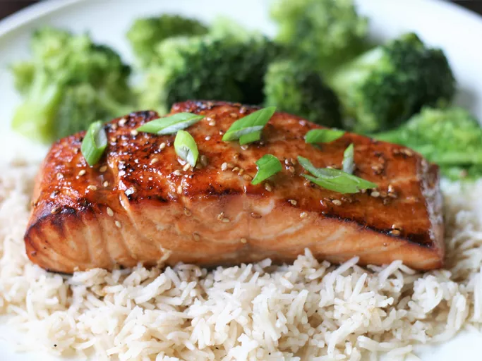

Teriyaki Salmon

Image by France C from allrecipes.com
Description
Teriyaki Samon is a favorite for many and you will soon discover why. This teriyaki salmon includes a sweet and savory marinade that will hook you and all those who try it.
This recipe has a prep time of 10 mins and a cook time of 15 mins. It provides 4 servings.
Nutrition Facts
- Calories: 900
- Fat: 63g
- Carbs: 8g
- Protein: 72g
Ingredients
- 1/4 cup of sesame oil
- 1/4 cup lemon juice
- 1/4 cup soy sauce
- 2 tablespoons brown sugar, or more to taste
- 1 tablespoon sesame seeds
- 1 teaspoon ground mustard
- 1 teaspoon ground ginger
- 1/4 teaspoon garlic powder
- 4 (6 oz) salmon steaks
Steps
- Mix sesame oil, lemon juice, soy sauce, brown sugar, sesame seeds, ground mustard, ginger, and garlic powder in a small saucepan over low heat. Bring to a simmer, stirring until sugar has dissolved. Set aside 1/2 cup of marinade for basting
- Pour remaining marinade into a resealable plastic bag. Add salmon steaks, coat with marinade, squeeze out excess air, and seal the bag. Marinate in the refrigerator for 1 to 2 hours.
- Set an oven rack about 6 inches from the heat source and preheat the oven's broiler.
- Broil salmon steaks under the preheated broiler for 5 minutes, brushing salmon with reserved marinade. Turn and continue to broil until salmon is opaque and flakes easily, about 5 more minutes. Brush with marinade.